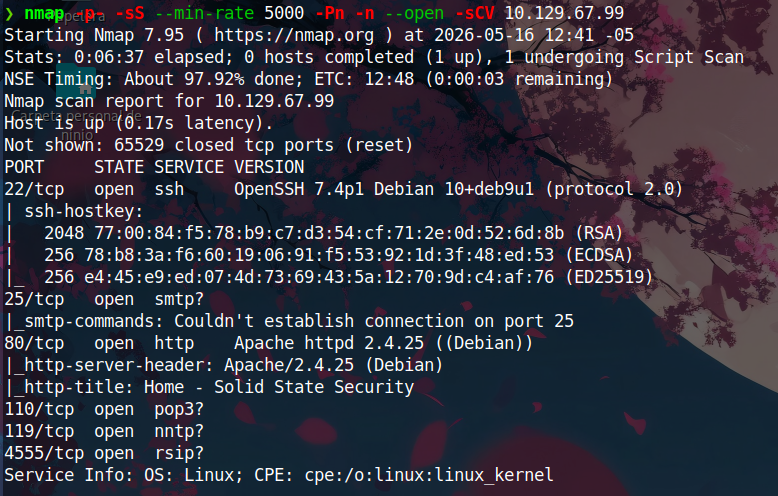
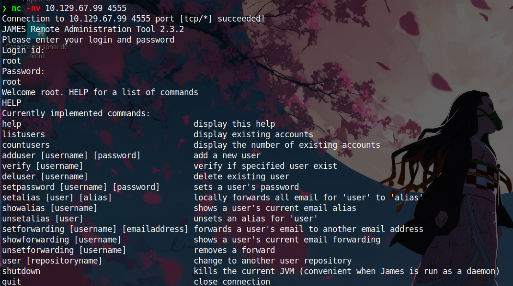
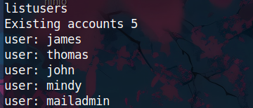

Primero realicé un escaneo completo de puertos utilizando Nmap:
nmap -p- -sS --min-rate 5000 -Pn -n --open -sCV <IP>
Se encontraron los siguientes servicios:

Como podemos observar, la máquina tiene varios servicios expuestos, entre ellos los puertos son 22, 25, 80, 110, 119 y 4555.
Al acceder al servicio web en el puerto 80, nos encontramos con una página aparentemente estática y sin funcionalidades interesantes por detrás.
Se intentó realizar fuzzing sobre la aplicación web en busca de directorios y archivos ocultos, pero no se encontró nada relevante.
Posteriormente, llamó la atención el puerto 4555, por lo que decidimos interactuar con él utilizando Netcat.
nc -nv <IP> 4555
Como podemos observar nos conecto y poniendo credenciales por defecto como "root:root" entramos al servicio, pidiendo la ayuda con el comando HELP vemos que podemos enumerar usuarios del sistema

con el comando listusers enumeramos usuarios:
